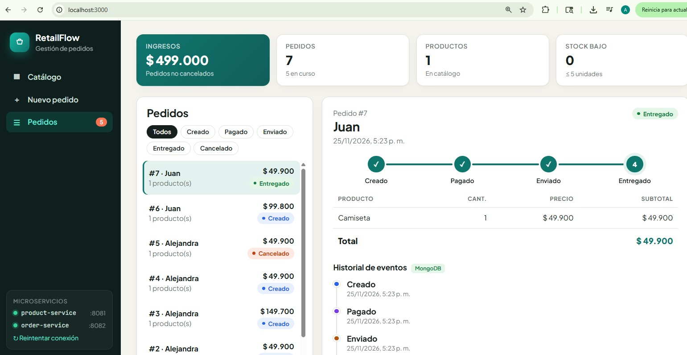
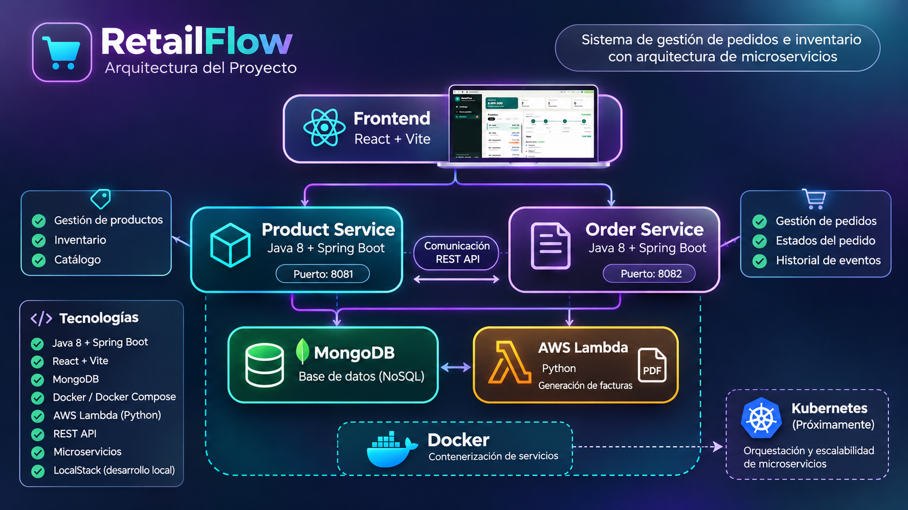
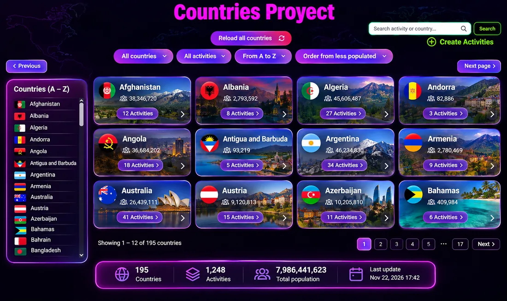
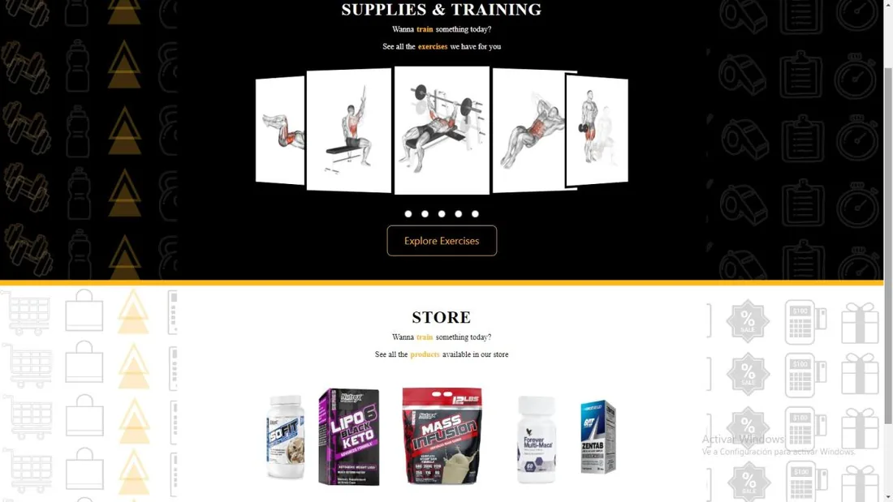
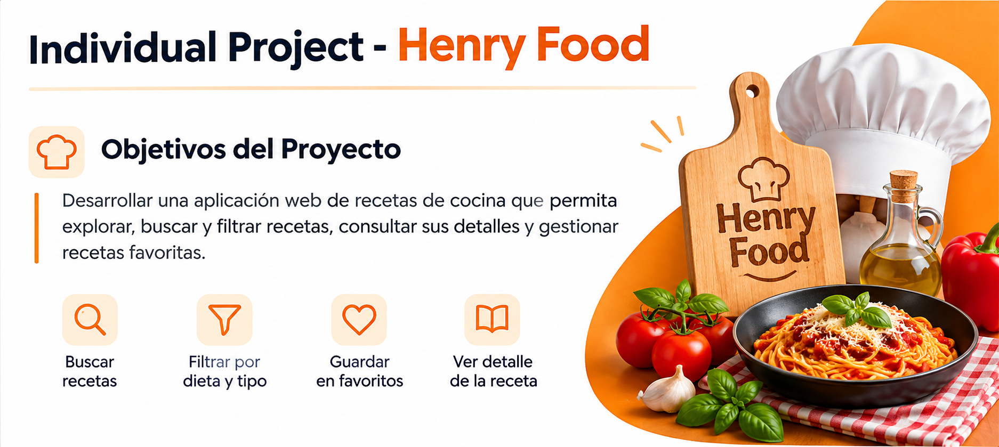

Globix
Marketplace donde las personas publican y encuentran productos y servicios en su país.


Nury Alejandra Blanco · Bogotá, Colombia
Soy desarrolladora Full Stack y me apasiona
convertir ideas en proyectos reales. Me encantan
los desafíos, porque creo que cuanto más grande
es el reto, mayor es la oportunidad de aprender,
crecer y superar mis propios límites.
Pongo el corazón en cada línea de código y me
esfuerzo por hacer las cosas bien, cuidando cada
detalle. En mis proyectos más recientes he asumido
de manera independiente todo el proceso de
desarrollo, desde la idea hasta la implementación,
pero también disfruto colaborar, compartir
conocimientos y construir soluciones en equipo.
Para mí, cada proyecto es una oportunidad de dar
lo mejor de mí, llevar mis habilidades al siguiente
nivel y crear algo de lo que pueda sentirme orgullosa.
const alejandra = { rol: "Desarrolladora Full Stack", ciudad: "Bogotá, Colombia", frontend: [ "JavaScript", "React", "React Native", "Next.js", "Angular", "Vue.js" ], backend: [ "Node.js", "Python", "FastAPI", "Java", ".NET", "Strapi" ], basesDeDatos: [ "PostgreSQL", "MongoDB", "SQL" ], cloud: [ "AWS", "Docker", "Vercel" ], especialidad: "Soluciones web y móviles", disponibilidad: [ "Remoto internacional", "Freelance" ] };
Aqui una selección de los proyectos más representativos de mi trayectoria como desarrolladora de software. Cada uno refleja mi pasión por la tecnología, mi compromiso con la calidad y mi capacidad para transformar ideas en soluciones reales. Más allá de escribir código, mi propósito es crear productos que aporten valor, superen expectativas y generen satisfacción en quienes confían en mi trabajo.
Marketplace donde las personas publican y encuentran productos y servicios en su país.
Plataforma Full Stack para el sector retail, desarrollada bajo una arquitectura de microservicios con Java y Spring Boot. Permite gestionar productos, inventarios, pedidos y su ciclo de vida, con un historial de eventos y generación automatizada de facturas mediante AWS Lambda y Python. Integra una interfaz desarrollada con React y Vite, MongoDB y una infraestructura contenerizada con Docker.


Aplicación hecha en Python que toma una base de datos con los números que han caído en las principales loterías de Colombia durante los últimos 20 años. Los organiza con varios criterios, como la frecuencia, el atraso frente al promedio de cada número y otros factores, para explorar su comportamiento histórico.
Ver proyecto en vivo →Proyectos académicos desarrollados durante mi formación en desarrollo de software, aplicando conocimientos de programación, habilidades técnicas y resolución de problemas en escenarios prácticos.

Explora 195 países con búsqueda, filtros por actividad, orden alfabético o por población y paginación.
El servidor gratuito de este proyecto ya no está activo, así que la demo no carga datos.
Ver la interfaz →
Sitio con un carrusel de ejercicios y una tienda de suplementos.

Proyecto individual Henry Food.
Soy desarrolladora Full Stack y disfruto transformar ideas en soluciones reales. Me apasiona crear aplicaciones web y móviles, trabajar tanto en frontend como en backend y enfrentar desafíos que me impulsen a seguir aprendiendo.
En mis proyectos más recientes he asumido de forma independiente diferentes etapas del desarrollo, desde la arquitectura y las bases de datos hasta las interfaces, integraciones y despliegue. Esta experiencia ha fortalecido mi autonomía, mi capacidad para resolver problemas y mi compromiso con cada resultado.
También valoro profundamente el trabajo en equipo. Me gusta compartir conocimientos, escuchar nuevas perspectivas y colaborar para encontrar las mejores soluciones. Creo que un gran proyecto no solo debe funcionar: debe estar bien pensado, bien construido y reflejar el esfuerzo y la pasión de quienes lo desarrollan.
¿Tienes un proyecto en mente o buscas una desarrolladora Full Stack para tu equipo? Me encantaría conocer tu idea, explorar nuevos desafíos y construir grandes soluciones juntos. ¡Hablemos!